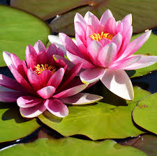

The Lotus symbolizes beauty, purity, and knowledge. The lotus is revered by several religions for its symbolism of beauty and growth. The lotus is a perennial plant with bowl-shaped flowers that have petals with an 8 to 12 inch diameter. It is an aquatic plant that thrives in nutrient-rich, murky conditions.

The queen of flowers, rose is very beautiful and attractive. It grows in different colours like red, white, yellow, pink and other varieties. Small thorns on the stem protect the plant. In the world of art, poetry and literature, rose has been glorified as a symbol of love, compassion and eternal beauty.